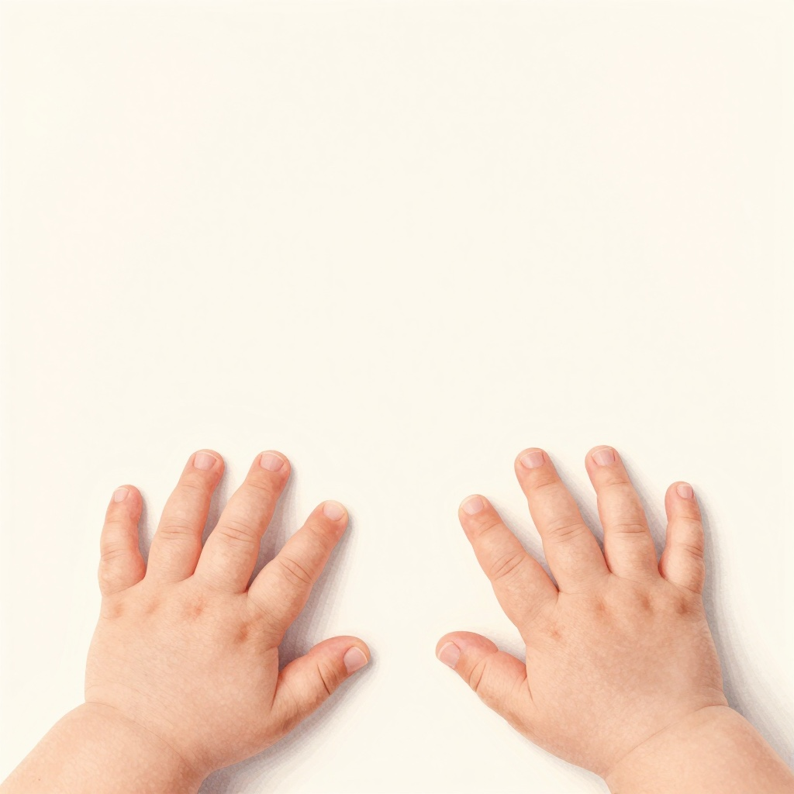
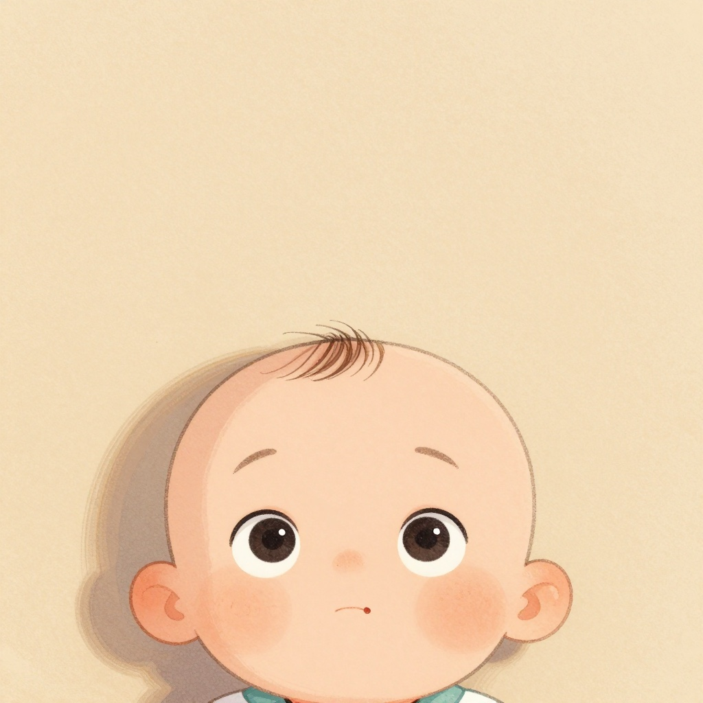
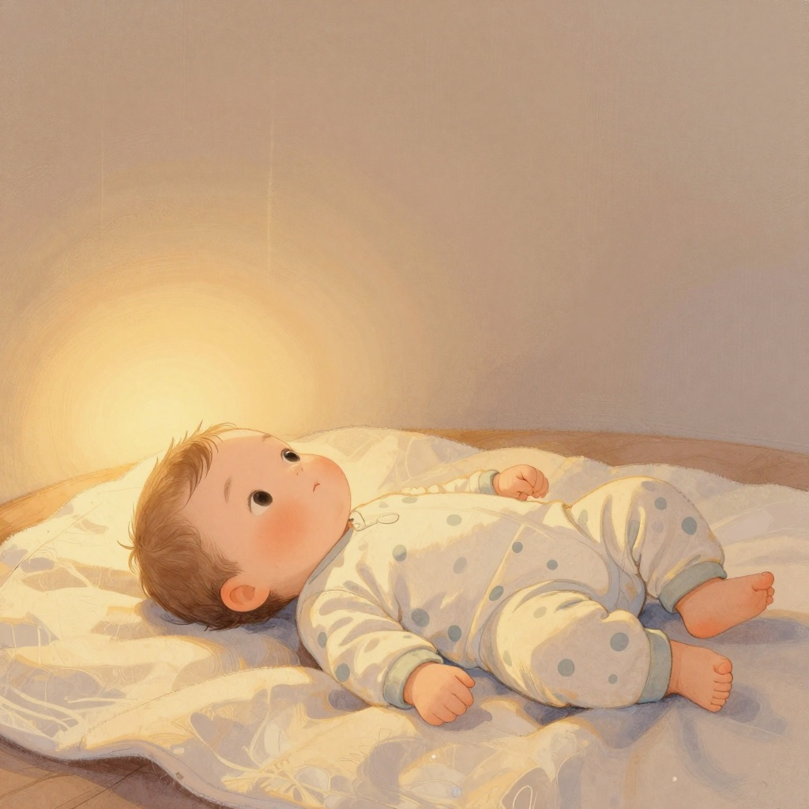
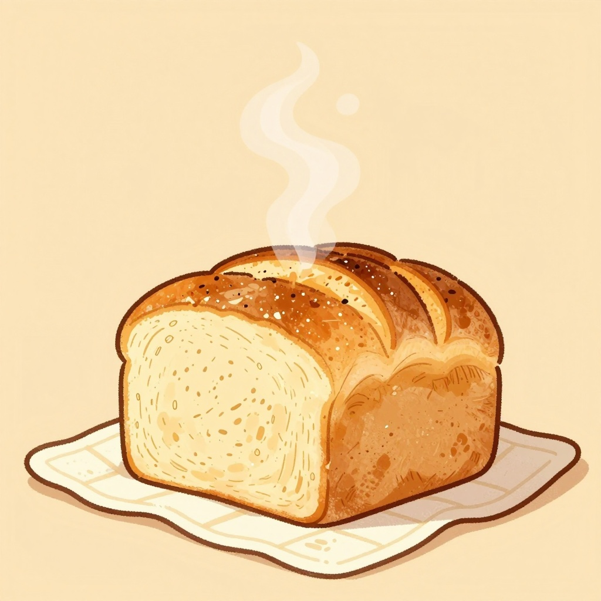
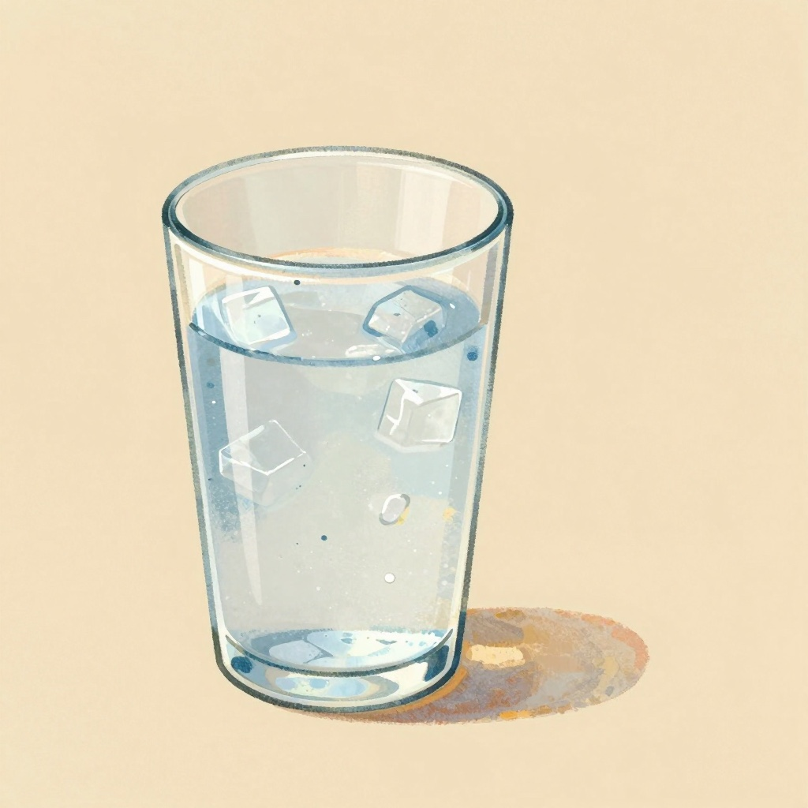
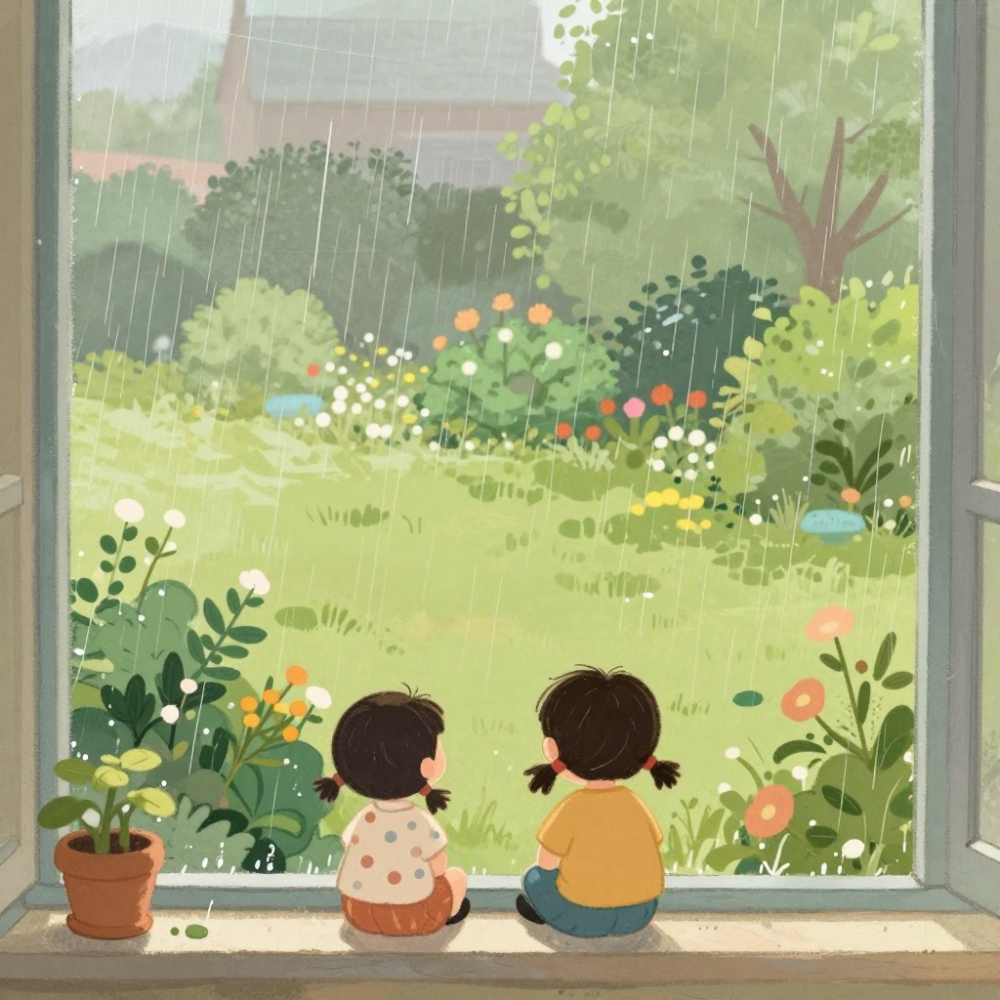
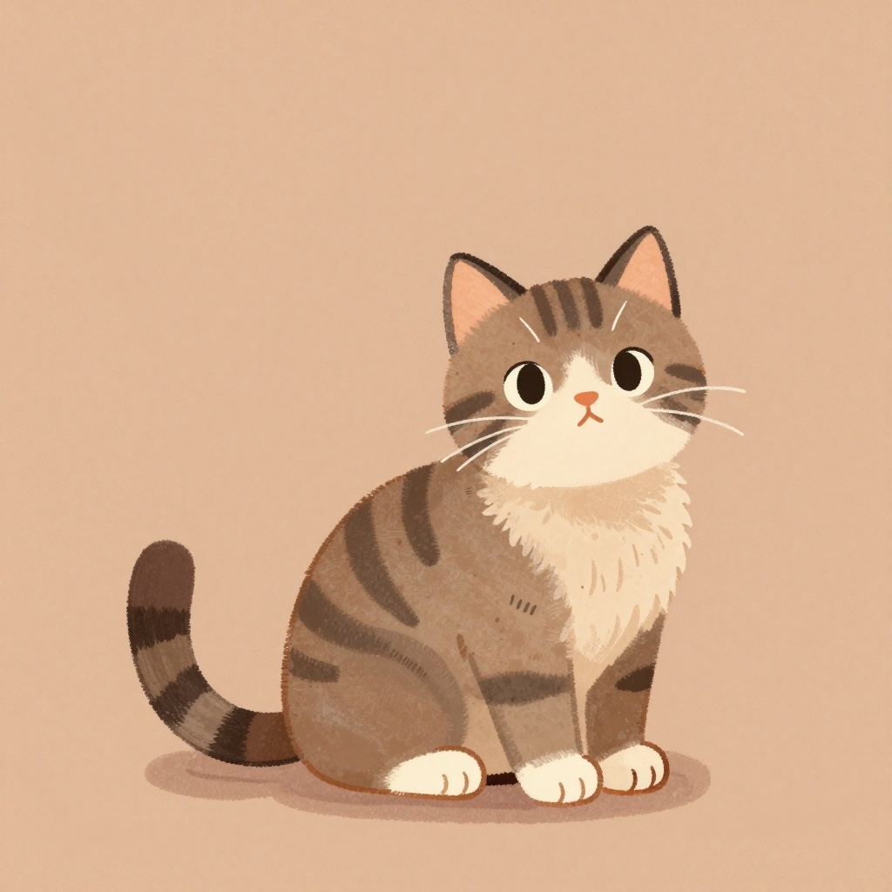
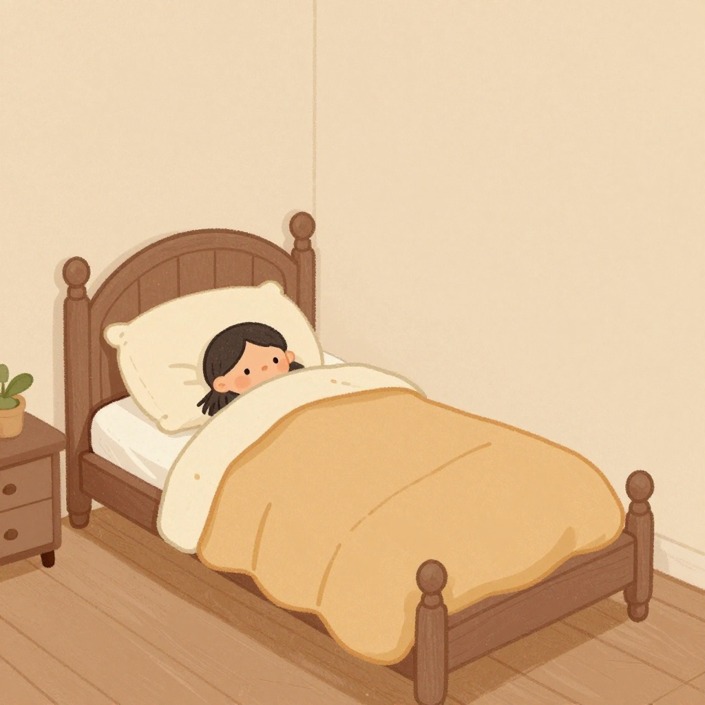
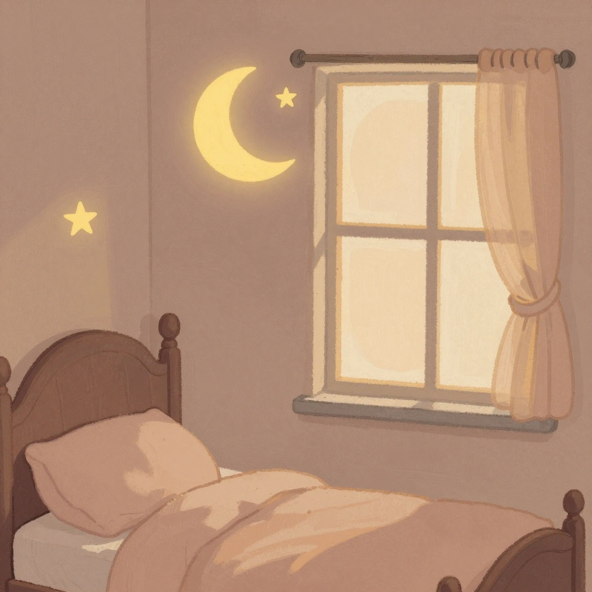

A book of thank-you
For the small things nobody thinks to be glad about.
على الأشياءِ الصغيرةِ التي لا يتذكّرُ أحدٌ أن يفرَحَ بها.

Ten fingers that open and close all by themselves. You did not ask for them. They came with you.
Alhamdulillah.
عشرةُ أصابعَ تنفتِحُ وتنغلِقُ وحدَها. لم تطلُبها، بل جاءت معك.
الحمدُ لله.

They find the window. They find the lamp. Best of all, they find a face looking back.
Alhamdulillah.
تجِدانِ النافذة. وتجِدانِ المِصباح. وأجملُ ما تجِدانِه وجهٌ ينظُرُ إليهما.
الحمدُ لله.

You knew it before you ever saw her. Out of every sound in the world, you turn your head for that one.
Alhamdulillah.
عرَفتَه قبلَ أن تراها. ومن بينِ كلِّ أصواتِ الدنيا، تلتفِتُ لهذا الصوتِ وحدَه.
الحمدُ لله.

It comes out of the oven and the whole house knows. Somebody grew the wheat. Somebody carried it here.
Alhamdulillah.
يخرُجُ من الفُرنِ فيعرِفُ البيتُ كلُّه. أحدٌ ما زرَعَ القمح. وأحدٌ ما حمَلَه إلى هنا.
الحمدُ لله.

Clear, and cold, and there whenever you want it. That is not a small thing anywhere in the world.
Alhamdulillah.
صافٍ، وباردٌ، وحاضرٌ متى أردتَه. وهذا ليس أمراً هيّناً في أيِّ مكانٍ من الأرض.
الحمدُ لله.

It taps on the glass all night and makes everything green by morning. Nobody had to ask it to come.
Alhamdulillah.
يُنقِرُ الزُّجاجَ طَوالَ الليل، فيُصبِحُ كلُّ شيءٍ أخضرَ في الصباح. ولم يطلُب أحدٌ منه أن يأتي.
الحمدُ لله.

She was here before you were. She sleeps at the end of the bed and keeps an eye on everybody.
Alhamdulillah.
كانت هنا قبلَك. تنامُ عندَ طَرَفِ السرير، وتُراقِبُ الجميع.
الحمدُ لله.

A roof over it, and walls around it, and people in the next room who would come if you called.
Alhamdulillah.
فوقَه سقف، وحولَه جُدران، وفي الغرفةِ المُجاورةِ من يأتي إن نادَيت.
الحمدُ لله.

Eight good things, and then one more, who is lying right here listening.
Alhamdulillah for you, Yusuf.
ثمانيةُ أشياءَ طيّبة، ثمّ واحدٌ زيادة، مُستلقٍ هنا يُنصِت.
الحمدُ لله عليك، يا يوسف.